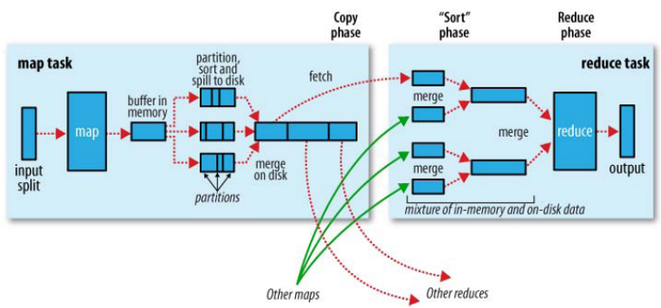
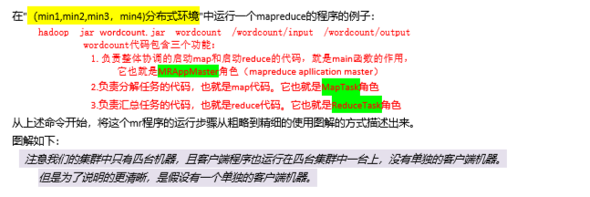
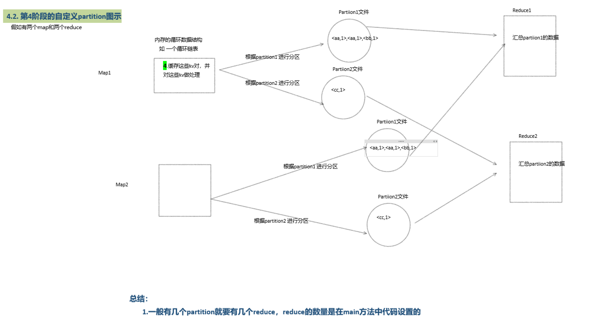
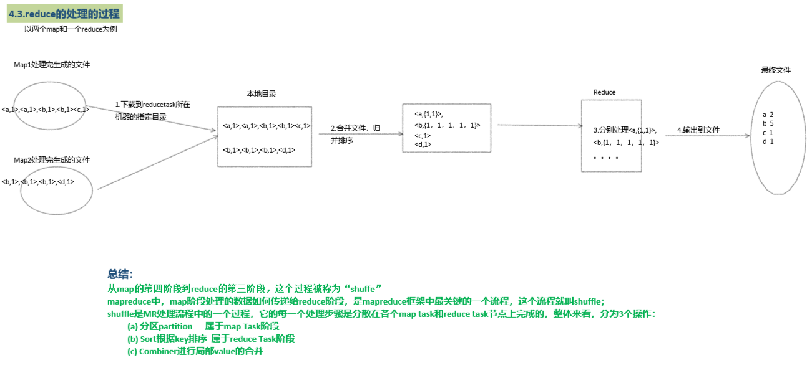

mapreduce高级特性及shuffle
回顾：
任务
1.shuffle机制详细讲解 2.MR案例多文件输出 3.MR案例partition使用 4.MR案例内容去重 5.MR案例敏感词汇过滤 6.MR案例自定义combiner的使用 7.MR案例倒排序索引 8.MR案例简单排序
目标
1.深入理解shuffle机制 2.掌握MR典型应用场景案例开发
1、shuffle机制
1.1 概述
mapreduce中，map阶段处理的数据如何传递给reduce阶段，是mapreduce框架中最关键的一个流程，这个流程就叫shuffle；shuffle:洗牌、发牌——（核心机制：数据分区，排序，缓存）；具体来说：就是将maptask输出的处理结果数据，分发给reducetask，并在分发的过程中，对数据按key进行了分区和排序；
1.2 主要流程

shuffle是MR处理流程中的一个过程，它的每一个处理步骤是分散在各个map task和reduce task节点上完成的，整体来看，分为3个操作：
- 分区partition 属于map Task阶段
- Sort根据key排序 属于reduce Task阶段
- Combiner进行局部value的合并
1.3 流程细分
由wordcount案例执行开始分步演示mapreduce运行逻辑（较粗，但对初学者理解mr有帮助）

mr结合yarn运行逻辑

mr客户端程序业务流程

MrAppmaster控制map与reduce运行的工作流程

shuffle流程




2、结合案例讲解mr重要知识点
1.1 获取文件名
在map运行时获取被处理数据所在文件的文件名
ximport java.io.IOException;import org.apache.hadoop.conf.Configuration;import org.apache.hadoop.fs.FileSystem;import org.apache.hadoop.fs.Path;import org.apache.hadoop.io.LongWritable;import org.apache.hadoop.io.Text;import org.apache.hadoop.mapreduce.InputSplit;import org.apache.hadoop.mapreduce.Job;import org.apache.hadoop.mapreduce.Mapper;import org.apache.hadoop.mapreduce.Reducer;import org.apache.hadoop.mapreduce.lib.input.FileInputFormat;import org.apache.hadoop.mapreduce.lib.input.FileSplit;import org.apache.hadoop.mapreduce.lib.output.FileOutputFormat;/** * * @author lyd * * 数据： * 如chinese.txt 其内容如下 * 小明 78 * 小红 80 * 小白 79 * * math.txt: * 小明 68 * 小红 70 * 小白 69 * * enlish.txt: * 小明 88 * 小红 90 * 小白 89 * * 输出： * chinese 79 * math 69 * english 89 关键代码 MyMapper类中的 InputSplit is = context.getInputSplit(); String fileName = ((FileSplit)is).getPath().getName(); */public class AvgDemo { //自定义myMapper public static class MyMapper extends Mapper<LongWritable, Text, Text, Text>{ //只在map方法运行之前执行一次。(仅执行一次) protected void setup(Context context) throws IOException, InterruptedException { } protected void map(LongWritable key, Text value,Context context) throws IOException, InterruptedException { String line = value.toString(); String lines [] = line.split(" "); //获取文件名字来作为key InputSplit is = context.getInputSplit(); String fileName = ((FileSplit)is).getPath().getName(); context.write(new Text(fileName), new Text(lines[1])); } //map方法运行完后执行一次(仅执行一次) protected void cleanup(Context context) throws IOException, InterruptedException { } } //自定义myReducer public static class MyReducer extends Reducer<Text, Text, Text, Text>{ //在reduce方法执行之前执行一次。(仅一次) protected void setup(Context context) throws IOException, InterruptedException { } protected void reduce(Text key, Iterable<Text> value,Context context) throws IOException, InterruptedException { double counter = 0; int sum = 0; for (Text t : value) { counter += Double.parseDouble(t.toString()); sum ++; } context.write(key, new Text((counter/sum)+"")); } //在reduce方法执行之后执行一次。(仅一次) protected void cleanup(Context context) throws IOException, InterruptedException { } } /** * job的驱动方法 * @param args */ public static void main(String[] args) { try { //1、获取Conf Configuration conf = new Configuration(); conf.set("fs.defaultFS", "hdfs://hadoop01:9000"); //2、创建job Job job = Job.getInstance(conf, "model01"); //3、设置运行job的class job.setJarByClass(AvgDemo.class); //4、设置map相关属性 job.setMapperClass(MyMapper.class); job.setMapOutputKeyClass(Text.class); job.setMapOutputValueClass(Text.class); FileInputFormat.addInputPath(job, new Path(args[0])); //5、设置reduce相关属性 job.setReducerClass(MyReducer.class); job.setOutputKeyClass(Text.class); job.setOutputValueClass(Text.class); //判断输出目录是否存在，若存在则删除 FileSystem fs = FileSystem.get(conf); if(fs.exists(new Path(args[1]))){ fs.delete(new Path(args[1]), true); } FileOutputFormat.setOutputPath(job, new Path(args[1])); //6、提交运行job int isok = job.waitForCompletion(true) ? 0 : 1; //退出 System.exit(isok); } catch (IOException | ClassNotFoundException | InterruptedException e) { e.printStackTrace(); } }}1.2 多文件输出
将mr处理后的结果数据输出到多个文件中
import java.io.IOException;import java.util.StringTokenizer;import org.apache.hadoop.conf.Configuration;import org.apache.hadoop.fs.FileSystem;import org.apache.hadoop.fs.Path;import org.apache.hadoop.io.LongWritable;import org.apache.hadoop.io.Text;import org.apache.hadoop.mapreduce.Job;import org.apache.hadoop.mapreduce.Mapper;import org.apache.hadoop.mapreduce.Reducer;import org.apache.hadoop.mapreduce.Reducer.Context;import org.apache.hadoop.mapreduce.lib.input.FileInputFormat;import org.apache.hadoop.mapreduce.lib.output.FileOutputFormat;import org.apache.hadoop.mapreduce.lib.output.MultipleOutputs;import org.apache.hadoop.mapreduce.lib.output.TextOutputFormat;/** * * @author lyd * *输入数据 *hello world *hi qianfeng *Hi qianfeng *Hello Qianfeng *QQ *163.com *1603 *@qq.com **123 **123 *(123) * *单词首字母为a-z的单词放到一个输出文件，并统计 *单词首字母为A-Z的单词放到一个输出文件，并统计 *单词首字母为0-9的单词放到一个输出文件，并统计 *单词首字母为其它的单词放到一个输出文件，并统计 * 关键代码： MyReducer类中： mos = new MultipleOutputs<Text, Text>(context); mos.write("az", key, new Text(counter+"")); main函数中： MultipleOutputs.addNamedOutput(job, "az", TextOutputFormat.class, Text.class, Text.class); */public class MultipleDemo { //自定义myMapper public static class MyMapper extends Mapper<LongWritable, Text, Text, Text>{ //只在map方法运行之前执行一次。(仅执行一次) protected void setup(Context context) throws IOException, InterruptedException { } protected void map(LongWritable key, Text value,Context context) throws IOException, InterruptedException { String line = value.toString(); StringTokenizer st = new StringTokenizer(line); while (st.hasMoreTokens()) { context.write(new Text(st.nextToken()), new Text("1")); } } //map方法运行完后执行一次(仅执行一次) protected void cleanup(Context context) throws IOException, InterruptedException { } } //自定义myReducer public static class MyReducer extends Reducer<Text, Text, Text, Text>{ //在reduce方法执行之前执行一次。(仅一次) MultipleOutputs<Text, Text > mos = null; protected void setup(Context context) throws IOException, InterruptedException { //获取mos多文件输出对象 mos = new MultipleOutputs<Text, Text>(context); } protected void reduce(Text key, Iterable<Text> value,Context context) throws IOException, InterruptedException { /* * qianfeng list(1,1) */ int counter = 0; for (Text t : value) { counter += Integer.parseInt(t.toString()); } String word = key.toString(); //判断单词首字母 String firstChar = word.substring(0,1); if(firstChar.matches("[a-z]")){ mos.write("az", key, new Text(counter+"")); } else if(firstChar.matches("[A-Z]")){ mos.write("AZ", key, new Text(counter+"")); } else if(firstChar.matches("[0-9]")){ mos.write("09", key, new Text(counter+"")); } else { mos.write("others", key, new Text(counter+"")); } } //在reduce方法执行之后执行一次。(仅一次) protected void cleanup(Context context) throws IOException, InterruptedException { mos.close(); } } /** * job的驱动方法 * @param args */ public static void main(String[] args) { try { //1、获取Conf Configuration conf = new Configuration(); conf.set("fs.defaultFS", "hdfs://hadoop01:9000"); //2、创建job Job job = Job.getInstance(conf, "model01"); //3、设置运行job的class job.setJarByClass(MultipleDemo.class); //4、设置map相关属性 job.setMapperClass(MyMapper.class); job.setMapOutputKeyClass(Text.class); job.setMapOutputValueClass(Text.class); FileInputFormat.addInputPath(job, new Path(args[0])); //设置多文件输出 MultipleOutputs.addNamedOutput(job, "az", TextOutputFormat.class, Text.class, Text.class); MultipleOutputs.addNamedOutput(job, "AZ", TextOutputFormat.class, Text.class, Text.class); MultipleOutputs.addNamedOutput(job, "09", TextOutputFormat.class, Text.class, Text.class); MultipleOutputs.addNamedOutput(job, "others", TextOutputFormat.class, Text.class, Text.class); //5、设置reduce相关属性 job.setReducerClass(MyReducer.class); job.setOutputKeyClass(Text.class); job.setOutputValueClass(Text.class); //判断输出目录是否存在，若存在则删除 FileSystem fs = FileSystem.get(conf); if(fs.exists(new Path(args[1]))){ fs.delete(new Path(args[1]), true); } FileOutputFormat.setOutputPath(job, new Path(args[1])); //6、提交运行job int isok = job.waitForCompletion(true) ? 0 : 1; //退出 System.exit(isok); } catch (IOException | ClassNotFoundException | InterruptedException e) { e.printStackTrace(); } }}1.3 partition分区
Mapreduce中会将map输出的kv对，按照相同key分组，然后分发给不同的reducetask默认的分发规则为：根据key的hashcode%reducetask数来分发，所以：如果要按照我们自己的需求进行分组，则需要改写数据分发（分组）组件Partitioner。
- 自定义一个CustomPartitioner继承抽象类：Partitioner
- 然后在job对象中，设置自定义partitioner： job.setPartitionerClass(CustomPartitioner.class)
自定义的partition类
xxxxxxxxxximport org.apache.hadoop.io.Text;import org.apache.hadoop.mapreduce.Partitioner;/** * 自定义分区类 * @author lyd * * *注意： *1、该类需要继承Partitioner类 *2、分区的类型需要和map端的输出(reduce端的输入)相同 *3、getPartition()方法只能返回int类型值 *4、分区数量需要和reduceTask的数量相等 *5、分区返回值尽量用%(模于)方式做。根据业务做 *6、默认使用HashPartitoiner。 */public class MyPartitioner extends Partitioner<Text, Text>{ /** * */ public int getPartition(Text key, Text value, int numPartitions) { String firstChar = key.toString().substring(0, 1); //判断 if(firstChar.matches("[a-z]")){ return 1%numPartitions; } else if (firstChar.matches("[A-Z]")){ return 2%numPartitions; } else if (firstChar.matches("[0-9]")){ return 3%numPartitions; } else { return 4%numPartitions; } }}PartitionerDemo
import java.io.IOException;import java.util.StringTokenizer;import org.apache.hadoop.conf.Configuration;import org.apache.hadoop.fs.FileSystem;import org.apache.hadoop.fs.Path;import org.apache.hadoop.io.LongWritable;import org.apache.hadoop.io.Text;import org.apache.hadoop.mapreduce.Job;import org.apache.hadoop.mapreduce.Mapper;import org.apache.hadoop.mapreduce.Reducer;import org.apache.hadoop.mapreduce.Reducer.Context;import org.apache.hadoop.mapreduce.lib.aggregate.ValueAggregatorBaseDescriptor;import org.apache.hadoop.mapreduce.lib.input.FileInputFormat;import org.apache.hadoop.mapreduce.lib.output.FileOutputFormat;/** * 分区 * @author lyd * *输入数据 *hello world *hi qianfeng *Hi qianfeng *Hello Qianfeng *QQ *163.com *1603 *@qq.com **123 **123 *(123) * *单词首字母为a-z的单词放到一个输出文件，并统计 *单词首字母为A-Z的单词放到一个输出文件，并统计 *单词首字母为0-9的单词放到一个输出文件，并统计 *单词首字母为其它的单词放到一个输出文件，并统计 * * *任务： *lh db *zyt zy *ls zy *hgw jc *yxx hd *hz hb *xyd hb *hj hb *cs hb */public class PartitionerDemo { //自定义myMapper public static class MyMapper extends Mapper<LongWritable, Text, Text, Text>{ //只在map方法运行之前执行一次。(仅执行一次) protected void setup(Context context) throws IOException, InterruptedException { } Text k = new Text(); Text v = new Text("1"); protected void map(LongWritable key, Text value,Context context) throws IOException, InterruptedException { String line = value.toString(); StringTokenizer st = new StringTokenizer(line); while (st.hasMoreTokens()) { k.set(st.nextToken()); context.write(k, v); } } //map方法运行完后执行一次(仅执行一次) protected void cleanup(Context context) throws IOException, InterruptedException { } } //自定义myReducer public static class MyReducer extends Reducer<Text, Text, Text, Text>{ //在reduce方法执行之前执行一次。(仅一次) protected void setup(Context context) throws IOException, InterruptedException { } Text v = new Text(); protected void reduce(Text key, Iterable<Text> value,Context context) throws IOException, InterruptedException { int counter = 0; for (Text t : value) { counter += Integer.parseInt(t.toString()); } v.set(counter+""); context.write(key, v); } //在reduce方法执行之后执行一次。(仅一次) protected void cleanup(Context context) throws IOException, InterruptedException { } } /** * job的驱动方法 * @param args */ public static void main(String[] args) { try { //1、获取Conf Configuration conf = new Configuration(); conf.set("fs.defaultFS", "hdfs://hadoop01:9000"); //2、创建job Job job = Job.getInstance(conf, "model01"); //3、设置运行job的class job.setJarByClass(PartitionerDemo.class); //4、设置map相关属性 job.setMapperClass(MyMapper.class); job.setMapOutputKeyClass(Text.class); job.setMapOutputValueClass(Text.class); FileInputFormat.addInputPath(job, new Path(args[0])); //设置partitioner的相关属性 job.setPartitionerClass(MyPartitioner.class); job.setNumReduceTasks(4); //设置reduce task数量。该数值需要和分区数相等 //5、设置reduce相关属性 job.setReducerClass(MyReducer.class); job.setOutputKeyClass(Text.class); job.setOutputValueClass(Text.class); //判断输出目录是否存在，若存在则删除 FileSystem fs = FileSystem.get(conf); if(fs.exists(new Path(args[1]))){ fs.delete(new Path(args[1]), true); } FileOutputFormat.setOutputPath(job, new Path(args[1])); //6、提交运行job int isok = job.waitForCompletion(true) ? 0 : 1; //退出 System.exit(isok); } catch (IOException | ClassNotFoundException | InterruptedException e) { e.printStackTrace(); } }}1.4 去除重复
去除文件中重复的行
xxxxxxxxxximport java.io.IOException;import org.apache.hadoop.conf.Configuration;import org.apache.hadoop.fs.FileSystem;import org.apache.hadoop.fs.Path;import org.apache.hadoop.io.LongWritable;import org.apache.hadoop.io.Text;import org.apache.hadoop.mapreduce.Job;import org.apache.hadoop.mapreduce.Mapper;import org.apache.hadoop.mapreduce.Reducer;import org.apache.hadoop.mapreduce.lib.input.FileInputFormat;import org.apache.hadoop.mapreduce.lib.output.FileOutputFormat;/** * * @author lyd *去重： * *多个文件： *1.file *2017-04-13 北京-重庆 15:30 *2017-04-13 北京-上海 17:30 *2017-04-13 北京-重庆 16:30 *2017-04-13 北京-广东 11:36 *2017-04-13 北京-海南 12:59 *2017-04-13 北京-拉萨 09:32 * *2.file *2017-04-13 北京-重庆 15:30 *2017-04-13 北京-上海 10:30 *2017-04-13 北京-重庆 16:30 *2017-04-13 广州-北京 11:36 *2017-04-13 海南-北京 12:59 *2017-04-13 北京-成都 09:32 * *输出： * 2017-04-13 北京-重庆 15:30 * 2017-04-13 北京-上海 17:30 * 2017-04-13 北京-重庆 16:30 * 2017-04-13 北京-广东 11:36 * 2017-04-13 北京-海南 12:59 * 2017-04-13 北京-拉萨 09:32 * 2017-04-13 北京-上海 10:30 * 2017-04-13 广州-北京 11:36 * 2017-04-13 海南-北京 12:59 * 2017-04-13 北京-成都 09:32 * * * 任务： * 统计日登陆次数？？统计日二次以上登陆次数？？统计日三次以上登陆次数？？ * user/login?uid=7595&pw=fjsj09eu5jituteoowu0 * user/login?uid=230&pw=fjsj09eu5jitiyt674 * user/login?uid=7595&pw=fjsj09eu5jiiui654 * user/login?uid=3323&pw=fjsj09eu5765764567 * user/login?uid=234&pw=fjsj09eu5jituteoowu0 * user/login?uid=7595&pw=fjsj09eu5jituteoowu0 * user/login?uid=6854&pw=fjsj09eu5jituteoowu0 * user/login?uid=230&pw=fjsj09eu5jituteoowu0 * user/login?uid=7595&pw=fjsj09eu5jituteoowu0 * user/login?uid=321&pw=fjsj09eu5jituteoowu0 * */public class DistinctDemo { //自定义myMapper public static class MyMapper extends Mapper<LongWritable, Text, Text, Text>{ //只在map方法运行之前执行一次。(仅执行一次) protected void setup(Context context) throws IOException, InterruptedException { } protected void map(LongWritable key, Text value,Context context) throws IOException, InterruptedException { context.write(value, new Text("")); } //map方法运行完后执行一次(仅执行一次) protected void cleanup(Context context) throws IOException, InterruptedException { } } //自定义myReducer public static class MyReducer extends Reducer<Text, Text, Text, Text>{ //在reduce方法执行之前执行一次。(仅一次) protected void setup(Context context) throws IOException, InterruptedException { } protected void reduce(Text key, Iterable<Text> value,Context context) throws IOException, InterruptedException { context.write(key, new Text("")); } //在reduce方法执行之后执行一次。(仅一次) protected void cleanup(Context context) throws IOException, InterruptedException { } } /** * job的驱动方法 * @param args */ public static void main(String[] args) { try { //1、获取Conf Configuration conf = new Configuration(); conf.set("fs.defaultFS", "hdfs://hadoop01:9000"); //2、创建job Job job = Job.getInstance(conf, "model01"); //3、设置运行job的class job.setJarByClass(DistinctDemo.class); //4、设置map相关属性 job.setMapperClass(MyMapper.class); job.setMapOutputKeyClass(Text.class); job.setMapOutputValueClass(Text.class); FileInputFormat.addInputPath(job, new Path(args[0])); //5、设置reduce相关属性 job.setReducerClass(MyReducer.class); job.setOutputKeyClass(Text.class); job.setOutputValueClass(Text.class); //判断输出目录是否存在，若存在则删除 FileSystem fs = FileSystem.get(conf); if(fs.exists(new Path(args[1]))){ fs.delete(new Path(args[1]), true); } FileOutputFormat.setOutputPath(job, new Path(args[1])); //6、提交运行job int isok = job.waitForCompletion(true) ? 0 : 1; //退出 System.exit(isok); } catch (IOException | ClassNotFoundException | InterruptedException e) { e.printStackTrace(); } }}1.5 过滤敏感词汇
一篇文章 article.txt 内容如下
We ask that you please do not send us emails privately asking for support. We are non-paid volunteers who help out with the project and we do not necessarily have the time or energy to help people on an individual basis. Instead, we have setup mailing lists for each module which often contain hundreds of individuals who will help answer detailed requests for help. The benefit of using mailing lists over private communication is that it is a shared resource where others can also learn from common mistakes and as a community we all grow together.
一个敏感词库 sensitive.txt 内容如下
ask from all
需求：在article.txt中过滤掉sensitive.txt 包含的词
xxxxxxxxxximport java.io.BufferedReader;import java.io.File;import java.io.FileReader;import java.io.IOException;import java.net.URI;import java.util.ArrayList;import java.util.List;import java.util.StringTokenizer;import org.apache.hadoop.conf.Configuration;import org.apache.hadoop.fs.FileSystem;import org.apache.hadoop.fs.Path;import org.apache.hadoop.io.LongWritable;import org.apache.hadoop.io.Text;import org.apache.hadoop.mapreduce.Job;import org.apache.hadoop.mapreduce.Mapper;import org.apache.hadoop.mapreduce.Reducer;import org.apache.hadoop.mapreduce.filecache.DistributedCache;import org.apache.hadoop.mapreduce.lib.input.FileInputFormat;import org.apache.hadoop.mapreduce.lib.output.FileOutputFormat;import org.apache.hadoop.util.GenericOptionsParser;import org.apache.hadoop.util.Tool;import org.apache.hadoop.util.ToolRunner;/** * 敏感词汇过滤并统计： * @author lyd * */public class GrepDemo extends ToolRunner implements Tool{ /** * 自定义的myMapper * @author lyd * */ static class MyMapper extends Mapper<LongWritable, Text, Text, Text>{ /** * 读取小文件进行缓存 （分布式缓存） */ static List<String> li = new ArrayList<String>(); protected void setup(Context context)throws IOException, InterruptedException { //获取缓存文件路径的数组 Path [] paths = DistributedCache.getLocalCacheFiles(context.getConfiguration()); //循环读取每一个缓存文件 for (Path p : paths) { //获取文件名字 String fileName = p.getName(); if(fileName.equals("dir")){ BufferedReader sb = null; sb = new BufferedReader(new FileReader(new File(p.toString()))); //读取BufferedReader里面的数据 String tmp = null; while ( (tmp = sb.readLine()) != null) { String ss []= tmp.split(" "); for (String s : ss) { li.add(s); } } //关闭sb对象 sb.close(); } } } protected void map(LongWritable key, Text value,Context context) throws IOException, InterruptedException { String line = value.toString(); StringTokenizer lines = new StringTokenizer(line); while (lines.hasMoreTokens()) { //判断每一个单词是否是敏感词汇 String word = lines.nextToken(); if(!li.contains(word)){ context.write(new Text(word), new Text("1")); } } } protected void cleanup(Context context)throws IOException, InterruptedException { } } /** * 自定义MyReducer * @author lyd * */ static class MyReducer extends Reducer<Text, Text, Text, Text>{ protected void setup(Context context)throws IOException, InterruptedException { } protected void reduce(Text key, Iterable<Text> value,Context context) throws IOException, InterruptedException { int counter = 0; for (Text t : value) { counter += Integer.parseInt(t.toString()); } context.write(key, new Text(counter+"")); } protected void cleanup(Context context)throws IOException, InterruptedException { } } public void setConf(Configuration conf) { conf.set("fs.defaultFS", "hdfs://hadoop01:9000"); } public Configuration getConf() { return new Configuration(); } /** * 驱动方法 */ public int run(String[] args) throws Exception { //1、获取conf对象 Configuration conf = getConf(); //2、创建job Job job = Job.getInstance(conf, "GrepDemo"); //3、设置运行job的class job.setJarByClass(GrepDemo.class); //4、设置map相关属性 job.setMapperClass(MyMapper.class); job.setMapOutputKeyClass(Text.class); job.setMapOutputValueClass(Text.class); FileInputFormat.addInputPath(job, new Path(args[0])); //设置分布式缓存文件 job.addCacheFile(new URI("hdfs://hadoop01:9000/1603data/dir")); //5、设置reduce相关属性 job.setReducerClass(MyReducer.class); job.setOutputKeyClass(Text.class); job.setOutputValueClass(Text.class); //判断输出目录是否存在，若存在则删除 FileSystem fs = FileSystem.get(conf); if(fs.exists(new Path(args[1]))){ fs.delete(new Path(args[1]), true); } FileOutputFormat.setOutputPath(job, new Path(args[1])); //6、提交运行job int isok = job.waitForCompletion(true) ? 0 : 1; return isok; } /** * job的主入口 * @param args */ public static void main(String[] args) { try { //对输入参数作解析 String [] argss = new GenericOptionsParser(new Configuration(), args).getRemainingArgs(); System.exit(ToolRunner.run(new GrepDemo(), argss)); } catch (Exception e) { e.printStackTrace(); } }}1.6 Combiner
combiner是MR程序中Mapper和Reducer之外的一种组件
combiner组件的父类就是Reducer
combiner和reducer的区别在于运行的位置：
- Combiner是在每一个maptask所在的节点运行
- Reducer是接收全局所有Mapper的输出结果；
combiner的意义就是对每一个maptask的输出进行局部汇总，以减小网络传输量。具体实现步骤：
- 自定义一个combiner继承Reducer，重写reduce方法
- 在job中设置： job.setCombinerClass(CustomCombiner.class)
combiner能够应用的前提是不能影响最终的业务逻辑，而且combiner的输出kv应该跟reducer的输入kv类型要对应起来
xxxxxxxxxximport java.io.IOException;import java.util.StringTokenizer;import org.apache.hadoop.conf.Configuration;import org.apache.hadoop.fs.FileSystem;import org.apache.hadoop.fs.Path;import org.apache.hadoop.io.LongWritable;import org.apache.hadoop.io.Text;import org.apache.hadoop.mapreduce.Job;import org.apache.hadoop.mapreduce.Mapper;import org.apache.hadoop.mapreduce.Reducer;import org.apache.hadoop.mapreduce.lib.input.FileInputFormat;import org.apache.hadoop.mapreduce.lib.output.FileOutputFormat;import org.apache.hadoop.util.GenericOptionsParser;import org.apache.hadoop.util.Tool;import org.apache.hadoop.util.ToolRunner;public class WordCountCombiner extends ToolRunner implements Tool{ /** * 自定义的myMapper * @author lyd * */ static class MyMapper extends Mapper<LongWritable, Text, Text, Text>{ protected void setup(Context context)throws IOException, InterruptedException { } protected void map(LongWritable key, Text value,Context context) throws IOException, InterruptedException { String line = value.toString(); StringTokenizer st = new StringTokenizer(line); while (st.hasMoreTokens()) { context.write(new Text(st.nextToken()), new Text(1+"")); } } protected void cleanup(Context context)throws IOException, InterruptedException { } } /** * 自定义MyReducer * @author lyd * */ static class MyReducer extends Reducer<Text, Text, Text, Text>{ protected void setup(Context context)throws IOException, InterruptedException { } protected void reduce(Text key, Iterable<Text> value,Context context) throws IOException, InterruptedException { int counter = 0; for (Text t: value) { counter += Integer.parseInt(t.toString()); } context.write(key, new Text(counter+"")); } protected void cleanup(Context context)throws IOException, InterruptedException { } } public void setConf(Configuration conf) { conf.set("fs.defaultFS", "hdfs://hadoop01:9000"); } public Configuration getConf() { return new Configuration(); } /** * 驱动方法 */ public int run(String[] args) throws Exception { //1、获取conf对象 Configuration conf = getConf(); //2、创建job Job job = Job.getInstance(conf, "model01"); //3、设置运行job的class job.setJarByClass(WordCountCombiner.class); //4、设置map相关属性 job.setMapperClass(MyMapper.class); job.setMapOutputKeyClass(Text.class); job.setMapOutputValueClass(Text.class); FileInputFormat.addInputPath(job, new Path(args[0])); //设置combiner类 //job.setCombinerClass(WCC.class); job.setCombinerClass(MyReducer.class); //5、设置reduce相关属性 job.setReducerClass(MyReducer.class); job.setOutputKeyClass(Text.class); job.setOutputValueClass(Text.class); //判断输出目录是否存在，若存在则删除 FileSystem fs = FileSystem.get(conf); if(fs.exists(new Path(args[1]))){ fs.delete(new Path(args[1]), true); } FileOutputFormat.setOutputPath(job, new Path(args[1])); //6、提交运行job int isok = job.waitForCompletion(true) ? 0 : 1; return isok; } /** * job的主入口 * @param args */ public static void main(String[] args) { try { //对输入参数作解析 String [] argss = new GenericOptionsParser(new Configuration(), args).getRemainingArgs(); System.exit(ToolRunner.run(new WordCountCombiner(), argss)); } catch (Exception e) { e.printStackTrace(); } }}1.7 倒排序
需求：
文章及其内容： index.html : hadoop is good hadoop hadoop is ok page.html : hadoop has hbase hbase is good hbase and hive content.html : hadoop spark hbase are good ok
输出： and page.html:1 are content.html:1 hadoop index.html:3;page.html:1;content.html:1 hbase page.html:3;content.html:1
DescSortCombiner
xxxxxxxxxximport java.io.IOException;import org.apache.hadoop.io.Text;import org.apache.hadoop.mapreduce.Reducer;public class DescSortCombiner extends Reducer<Text, Text, Text, Text>{ /** * index.html_hadoop list(1,1,1) * index.html_is list(1,1) * index.html_good list(1) * index.html_ok list(1) * page.html_hadoop list(1) * * * hadoop index.html:3 * hadoop page.html:1 * * */ protected void reduce(Text key, Iterable<Text> value,Context context) throws IOException, InterruptedException { int counter = 0; Text k = new Text(); Text v = new Text(); String s [] = key.toString().split("_"); for (Text t : value) { counter += Integer.parseInt(t.toString()); } k.set(s[1]); v.set(s[0]+":"+counter); context.write(k, v); } }DescSort
xxxxxxxxxximport java.io.IOException;import java.util.ArrayList;import java.util.List;import org.apache.hadoop.conf.Configuration;import org.apache.hadoop.conf.Configured;import org.apache.hadoop.fs.FileSystem;import org.apache.hadoop.fs.Path;import org.apache.hadoop.io.LongWritable;import org.apache.hadoop.io.Text;import org.apache.hadoop.mapreduce.InputSplit;import org.apache.hadoop.mapreduce.Job;import org.apache.hadoop.mapreduce.Mapper;import org.apache.hadoop.mapreduce.Reducer;import org.apache.hadoop.mapreduce.lib.input.FileInputFormat;import org.apache.hadoop.mapreduce.lib.input.FileSplit;import org.apache.hadoop.mapreduce.lib.output.FileOutputFormat;import org.apache.hadoop.util.GenericOptionsParser;import org.apache.hadoop.util.Tool;import org.apache.hadoop.util.ToolRunner;/** * * @author lyd * *倒排索引： * */public class DescSort extends Configured implements Tool{ /** * 自定义的myMapper * @author lyd * */ static class MyMapper extends Mapper<LongWritable, Text, Text, Text>{ protected void setup(Context context)throws IOException, InterruptedException { } protected void map(LongWritable key, Text value,Context context) throws IOException, InterruptedException { String line = value.toString(); //获取文件名 InputSplit is = context.getInputSplit(); String fileName = ((FileSplit)is).getPath().getName(); String lines [] = line.split(" "); for (String s: lines) { context.write(new Text(fileName+"_"+s), new Text(1+"")); } /** * index.html_hadoop 1 * index.html_is 1 * index.html_good 1 * index.html_hadoop 1 * index.html_hadoop 1 * index.html_is 1 * index.html_ok 1 * page.html_hadoop 1 */ } protected void cleanup(Context context)throws IOException, InterruptedException { } } /** * 自定义MyReducer * @author lyd * */ static class MyReducer extends Reducer<Text, Text, Text, Text>{ protected void setup(Context context)throws IOException, InterruptedException { } List<String> li = new ArrayList<String>(); protected void reduce(Text key, Iterable<Text> value,Context context) throws IOException, InterruptedException { /** * index.html_hadoop list(1,1,1) * index.html_is list(1,1) * index.html_good list(1) * index.html_ok list(1) * page.html_hadoop list(1) * * *hadoop list(index.html:3,page.html:1) */ /* int counter = 0; for (Text t : value) { counter += Integer.parseInt(t.toString()); } String s [] = key.toString().split("_"); li.add(s[1]+" "+s[0]+":"+counter);*/ String v = ""; for (Text t : value) { v += t.toString() +";"; } context.write(key, new Text(v.substring(0, v.length()-1))); } protected void cleanup(Context context)throws IOException, InterruptedException { /*for (String s : li) { String ss [] = s.split(" "); }*/ } } public int run(String[] args) throws Exception { //1、获取conf对象 Configuration conf = super.getConf(); //2、创建job Job job = Job.getInstance(conf, "model03"); //3、设置运行job的class job.setJarByClass(DescSort.class); //4、设置map相关属性 job.setMapperClass(MyMapper.class); job.setMapOutputKeyClass(Text.class); job.setMapOutputValueClass(Text.class); FileInputFormat.addInputPath(job, new Path(args[0])); //设置commbiner job.setCombinerClass(DescSortCombiner.class); //5、设置reduce相关属性 job.setReducerClass(MyReducer.class); job.setOutputKeyClass(Text.class); job.setOutputValueClass(Text.class); //判断输出目录是否存在，若存在则删除 FileSystem fs = FileSystem.get(conf); if(fs.exists(new Path(args[1]))){ fs.delete(new Path(args[1]), true); } FileOutputFormat.setOutputPath(job, new Path(args[1])); //6、提交运行job int isok = job.waitForCompletion(true) ? 0 : 1; return isok; } /** * job的主入口 * @param args */ public static void main(String[] args) { try { //对输入参数作解析 String [] argss = new GenericOptionsParser(new Configuration(), args).getRemainingArgs(); System.exit(ToolRunner.run(new DescSort(), argss)); } catch (Exception e) { e.printStackTrace(); } }}1.8 简单排序
import java.io.IOException;import org.apache.hadoop.conf.Configuration;import org.apache.hadoop.fs.FileSystem;import org.apache.hadoop.fs.Path;import org.apache.hadoop.io.IntWritable;import org.apache.hadoop.io.LongWritable;import org.apache.hadoop.io.Text;import org.apache.hadoop.mapreduce.Job;import org.apache.hadoop.mapreduce.Mapper;import org.apache.hadoop.mapreduce.lib.input.FileInputFormat;import org.apache.hadoop.mapreduce.lib.output.FileOutputFormat;/** * * @author lyd *简单排序 * *数据： * *899 *45 *654564 *432 *45236 *76 *654 *32 *643 *45 *754 *34 * * *词频统计并按照次数高低排序？？取前三个？？ *hello qianfeng hello qianfeng world hello hadoop hello qianfeng hadoop hello 4 qianfeng 3 hadoop 2 * */public class SortSample { //自定义myMapper public static class MyMapper extends Mapper<LongWritable, Text, IntWritable, Text>{ //只在map方法运行之前执行一次。(仅执行一次) protected void setup(Context context) throws IOException, InterruptedException { } protected void map(LongWritable key, Text value,Context context) throws IOException, InterruptedException { context.write(new IntWritable(Integer.parseInt(value.toString())), new Text("")); } //map方法运行完后执行一次(仅执行一次) protected void cleanup(Context context) throws IOException, InterruptedException { } } /*//自定义myReducer public static class MyReducer extends Reducer<Text, Text, Text, Text>{ //在reduce方法执行之前执行一次。(仅一次) @Override protected void setup(Context context) throws IOException, InterruptedException { } @Override protected void reduce(Text key, Iterable<Text> value,Context context) throws IOException, InterruptedException { context.write(new Text(value.toString()), new Text("")); } //在reduce方法执行之后执行一次。(仅一次) @Override protected void cleanup(Context context) throws IOException, InterruptedException { } }*/ /** * job的驱动方法 * @param args */ public static void main(String[] args) { try { //1、获取Conf Configuration conf = new Configuration(); conf.set("fs.defaultFS", "hdfs://hadoop01:9000"); //2、创建job Job job = Job.getInstance(conf, "model01"); //3、设置运行job的class job.setJarByClass(SortSample.class); //4、设置map相关属性 job.setMapperClass(MyMapper.class); job.setMapOutputKeyClass(IntWritable.class); job.setMapOutputValueClass(Text.class); FileInputFormat.addInputPath(job, new Path(args[0])); //5、设置reduce相关属性 /*job.setReducerClass(MyReducer.class); job.setOutputKeyClass(Text.class); job.setOutputValueClass(Text.class);*/ //判断输出目录是否存在，若存在则删除 FileSystem fs = FileSystem.get(conf); if(fs.exists(new Path(args[1]))){ fs.delete(new Path(args[1]), true); } FileOutputFormat.setOutputPath(job, new Path(args[1])); //6、提交运行job int isok = job.waitForCompletion(true) ? 0 : 1; //退出 System.exit(isok); } catch (IOException | ClassNotFoundException | InterruptedException e) { e.printStackTrace(); } }}